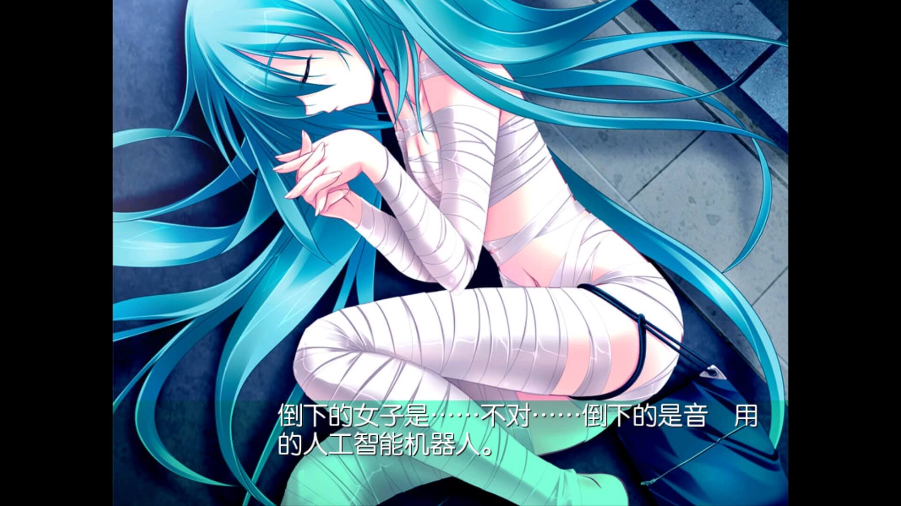
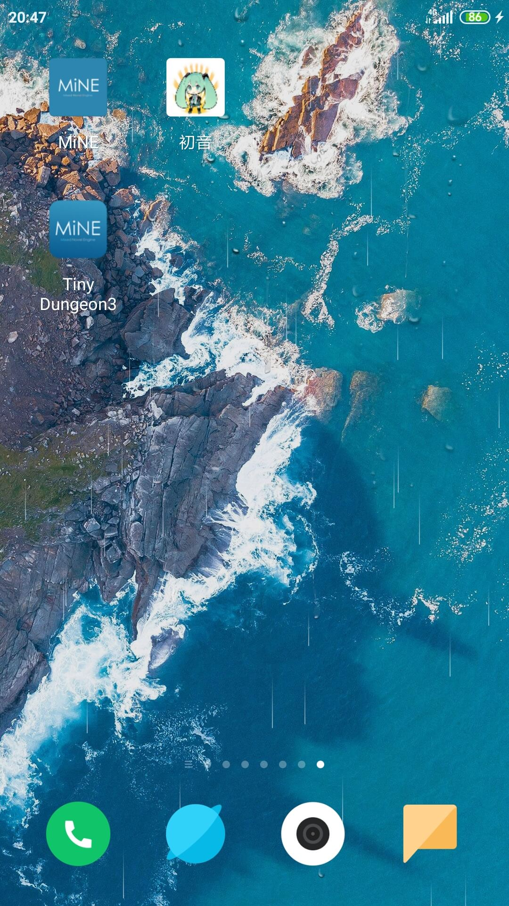

MiNE使用教程
一个游戏的组成至少需要0.txt或nscripter.dat和arc.nsa和default.ttf,缺少其中任何一个则无法运行
开启MiNE如果没有存储权限则会弹出授权请求
点击允许获得授权后会跳转到主页面
在主页面会自动搜索MiNE或ONS文件夹，如果文件夹不存在则需要手动设置
点击齿轮打开菜单，点击游戏路径设置
点击目录查找到游戏所在根目录，点击设置目录即可
如果需要加载外置存储如SD卡里的游戏时，点击齿轮打开菜单，点击外部存储路径设置
点击红色框选部分选择要加载的SD卡，然后浏览置游戏所在根目录，例如MiNE目录，点击选择即可
以下是加载了SD卡游戏列表,可以看到多了一个游戏
点击一个游戏，在选择列表上会显示一个扳手按钮和一个播放按钮，点击播放可直接运行游戏
点击扳手则打开设置菜单,一般游戏使用默认设置即可，点击播放按钮运行游戏
进入游戏后，右边是快捷按钮，可进行功能操作
在游戏界面双指点击则弹出菜单
点击菜单按钮进入二级设置菜单，在这里可以功能选择或对按钮等进行设置
如果需要隐藏右边按钮栏下滑找到按键(右)，点击
选择关闭即可关闭右侧按钮栏
以下为关闭右侧按钮栏效果

按钮也可以自定义背景，将btn.png放到游戏根目录即可，例如放到MiNE文件夹里
设置的图片需要和按钮大小一致，否则会进行拉伸，按钮图片大小计算方法
宽度=屏幕宽-屏幕宽*3/4，高度=屏幕高/6
对于16比9的游戏则需要在菜单中选择游戏比例，以TD为例
点击屏幕比例扳手选择16：9即可
对于较老的16:9游戏，如eden，则需要在游戏文件夹下建立ons.wide文件以开启支持
以下为运行效果
可以看到16:9全屏时右边没有了功能按钮，接下来介绍手势操作
双指下滑可呼出游戏菜单，进行存档之类的操作，触发一次安卓的返回键再点击一次屏幕也可以呼出
双指右滑进入快进模式，此时滑动完不要抬手，则一直处于快进状态，抬起双指时结束快进
三指快速点击屏幕两次则可以快速退出游戏
现已增加手柄操作支持
在游戏列表页面上下键选择游戏，A键运行游戏，B键返回，X键打开游戏设置 Y键打开系统设置
进入游戏后,A键:确定/点击 B键:游戏菜单/返回 X键:系统菜单
Y键:截图 左右键:回顾对话 L1键:长按快进，按B键取消 R1键:按住快进松开取消
接下来介绍创建游戏的快捷方式
在点开扳手进入菜单设置时，底部的播放按钮右边的按钮则是快捷方式按钮
点击即可在桌面创建快捷方式，下次点击快捷方式可以直接进入游戏
当没有创建快捷方式权限时，需要手动设置权限，在系统设置进入应用权限管理给MiNE创建的权限
桌面快捷方式选择允许
以下为成功创建效果,如果游戏文件夹里有icon.png,则以该图创建icon
